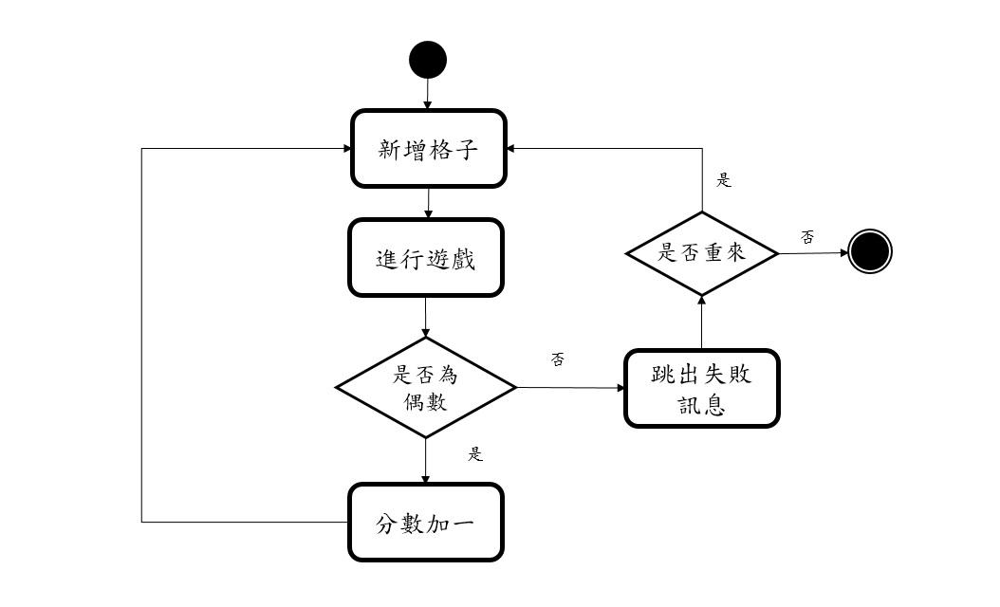
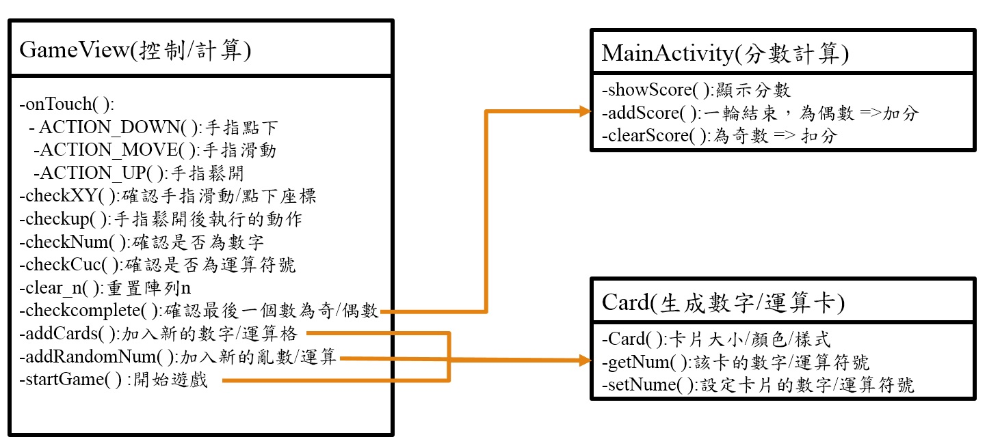
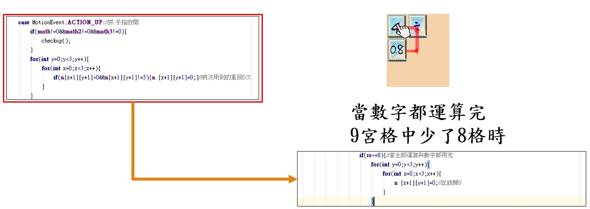
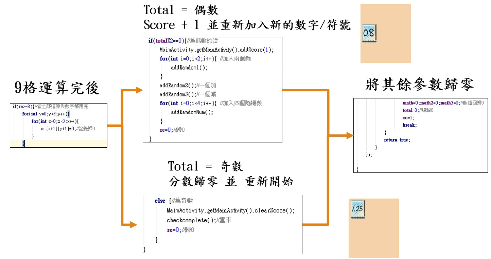

EVEN遊戲
Android Studio實作
使用Android Studio開發的app小遊戲，在九宮格內滑動數字及運算格，計算至最後一個數為雙數勝利，反之則失敗。
章節
- 遊戲介紹
- 簡易類別圖
- 程式碼介紹
遊戲介紹
流程圖
簡易類別圖
MainActivity: 用於分數計算，完成一輪九宮格+1分，失敗則歸零。
Card: 用於字卡設計以及格子內的數字儲存/挪用。
GameView: 大部分的邏輯運算，包含:手指點擊/移動狀態、數字運算、開始/重置遊戲等。
程式碼介紹
重點介紹GameView的程式邏輯:
-
參數設定
開始遊戲
手指動作
失敗訊息
private int n [][] =new int[4][4];//紀錄移動到過哪個點用
private int co =1;//計算次數用 和 紀錄經過觸控順序
private int total=0;//總數
private int math=0;
private int math2=0;
private int math3=0;
private int re=0;
-陣列n : 紀錄移動到過的點
-co : 紀錄經過次數(不得超過3次)
-total: 每次計算後的總數值
-math, math2, math3 : 手指經過的3個數字/運算卡
-re : 總計使用過的字卡(消耗最多8個)
private void startGame(){ //遊戲起始
for(int y=0;y<3;y++){ //清空原本的值
for(int x=0;x<3;x++){
cardsMap[x][y].setNum(0);//清空 卡片
}
}
clearn();
for(int i=0;i<2;i++){ //加入兩個乘
addRandom1();
}
addRandom2();//一個加
addRandom3();//一個減
for(int i=0;i<5;i++){ //加入五個隨機數
addRandomNum();
}
}
-加入4個運算符號
-加入5個隨機數字
private void initGameView(){
setColumnCount(3);//行數
setBackgroundColor(0xffA6A6D2);//底色
setOnTouchListener(new OnTouchListener() {//觸控事件
private float startX,startY,offsetX,offsetY,mX,mY;
手指按下
public boolean onTouch(View view, MotionEvent motionEvent) {
switch (motionEvent.getAction()){
case MotionEvent.ACTION_DOWN: //抓 手指按下
startX = motionEvent.getX();
startY = motionEvent.getY();
checkXY(startX,startY);
if(startX>734||startY>734||startX<1||startY<1) {//方格外
co=4;
}
break;
checkXY
確認手指是否有在九宮格範圍內，(x,y)座標:x (1~734), y(1~734)，並且經過的格子數不超過3(co<4)
private void checkXY(float startX,float startY){ //抓起始點
int cx = 0,cy=0;
if(startX<245&&startX>1){//抓第一直行 1-1 1-2 1-3
if(startY<245&&startY>1&&n[1][1]<=0&&co<4){
//1-1 如果起始按下處不為1-1且移動到1-1已計算一次且總計次不超過三次則執行
cx=1;cy=1;
}
else if(startY>245&&startY<490&&n[1][2]<=0&&co<4){
cx=1;cy=2;
}
else if(startY>490&&startY<734&&n[1][3]<=0&&co<4){
cx=1;cy=3;
}
}
else if(startX>245&&startX<490){//抓第二直行 2-1 2-2 2-3
if(startY<245&&startY>1&&n[2][1]<=0&&co<4){
//2-1 如果起始按下處不為2-1且移動到2-1已計算一次且總計次不超過三次則執行
cx=2;cy=1;
}
else if(startY>245&&startY<490&&n[2][2]<=0&&co<4){
cx=2;cy=2;
}
else if(startY>490&&startY<734&&n[2][3]<=0&&co<4){
cx=2;cy=3;
}
}
else if(startX>490&&startX<734) {//抓第三直行 3-1 3-2 3-3
if (startY < 245 && startY > 1 && n[3][1] <= 0&&co<4) {
//3-1 如果起始按下處不為3-1且移動到3-1已計算一次且總計次不超過三次則執行
cx=3;cy=1;
} else if (startY > 245 && startY < 490 && n[3][2] <= 0&&co<4) {
cx=3;cy=2;
} else if (startY > 490 && startY < 734 && n[3][3] <= 0&&co<4) {
cx=3;cy=3;
}
}
若不超過格子則確認格內數字並記錄。
if(cx!=0||cy!=0){
System.out.println(cx+"-"+cy+"m");
n[cx][cy]=co;
if(co==2){math2=cardsMap[cx-1][cy-1].getNum();
System.out.println(math2);
checkCuc();
System.out.println(math2);}
else if(co==3){math3=cardsMap[cx-1][cy-1].getNum();
System.out.println(math3);
checkNum3();
System.out.println(math3);}
co++;
}
確認格子
確認滑動格子1,2,3(math,math2,math3)分別為數字、運算符號、數字，否則該次點擊不算數(co=4)。
checkNum:確認是否為數字(n>0) ; checkCuc:確認是否為運算(n<0)
private void checkNum(){ //確認按下第一個 是否為數字
if(math<0){
math=0;
total=0;
co=4;
}
}
private void checkCuc(){ //確認按下第二個 是否為乘除
if(math2>0){
math2=0;
total=0;
co=4;
}
}
手指移動
case MotionEvent.ACTION_MOVE: //抓 手指移動
mX = motionEvent.getX();
mY = motionEvent.getY();
checkXY(mX,mY);
if(mX>734||mY>734||mX<1||mY<1) {//方格外
co=4;
}
break;
手指鬆開
 
case MotionEvent.ACTION_UP://抓 手指放開
if(math!=0&&math2!=0&&math3!=0){
checkup();
}
for(int y=0;y<3;y++){
for(int x=0;x<3;x++){
if(n[x+1][y+1]>0&&n[x+1][y+1]!=5){n [x+1][y+1]=0;}
//將沒用到的重回0次
}
}
if(re>=8){//當全部運算與數字都用完
for(int y=0;y<3;y++){
for(int x=0;x<3;x++){
n [x+1][y+1]=0;//記錄歸0
}
}
if(total%2==0){//為偶數的話
MainActivity.getMainActivity().addScore(1);
for(int i=0;i<2;i++){ //加入兩個乘
addRandom1();
}
addRandom2();//一個加
addRandom3();//一個減
for(int i=0;i<4;i++){ //加入四個隨機數
addRandomNum();
}
re=0;//歸0
}
else {//為奇數
MainActivity.getMainActivity().clearScore();
checkcomplete();//重來
re=0;//歸0
}
}
math=0;math2=0;math3=0;//數值回歸0
total=0;//總歸0
co=1;
break;
若最後數值為奇數，則跳出失敗訊息，重置分數。
private void checkcomplete(){ //確認是否為奇數 =>結束
boolean complete = true;
if (complete){//跳出警示框 顯示結束
new AlertDialog.Builder(getContext()).setTitle("失敗")
.setMessage("請重新開始")
.setPositiveButton("重來", new DialogInterface.OnClickListener() {
@Override
public void onClick(DialogInterface dialogInterface, int i) {
startGame();//重新開始
}
}).show();
}
}